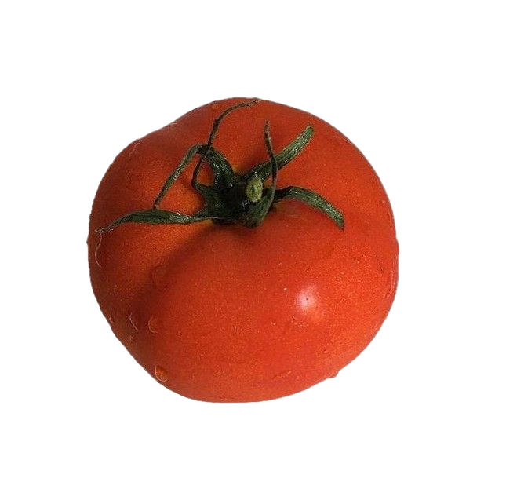

My Journey
Since arriving here, I have engaged in numerous activities. I joined the Faculty of Science student sub-committee, which allowed me to make many friends and even earn a Sciband. It has been an incredibly enjoyable experience, providing me with valuable insights and skills.Although I haven't had the chance to try all the restaurants yet, I've discovered a favorite spot on campus: the chicken rice restaurant at the Green Cafeteria. The food there is absolutely delicious, and I highly recommend giving it a try!
